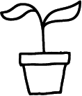

Makkelijke planten
Ben je op zoek naar mooie planten, maar heb je geen groene vingers? Geen probleem! Hier vind je een collectie van makkelijk te verzorgen planten!
Lees meer
Welkom bij Amstergreen! Deze site is geïnspireerd door de winkel De Wildernis in Amsterdam. Met Amstergreen willen we laten zien dat groene keuzes impact hebben en dat het verzorgen van planten makkelijker kan zijn dan je denkt! Of je nu op zoek bent naar eenvoudig te onderhouden planten of handige verzorgingstips – bij Amstergreen ben je aan het juiste adres voor een gezond stukje natuur in huis.
Bij De Wildernis worden kamerplanten zonder pesticiden en kunstmest gekweekt, zodat je een gezondere en milieuvriendelijke keuze maakt. Door voor biologische planten te kiezen, draag je bij aan een betere wereld, zowel binnen als buiten je huis.

Geen plantenkennis? Geen probleem! Deze site helpt je op weg.
Biologische en duurzame planten hebben veel voordelen! Ze worden vaak op een milieuvriendelijke manier gekweekt, waarbij minder of geen chemische bestrijdingsmiddelen worden gebruikt. Dit kan bijdragen aan minder schadelijke stoffen in de grond en het water. Daarnaast wordt er bij biologische planten vaak gekozen voor potgrond en bemesting die beter zijn voor het milieu.
Ben je op zoek naar mooie planten, maar heb je geen groene vingers? Geen probleem! Hier vind je een collectie van makkelijk te verzorgen planten!
Lees meerWil je meer leren over de verzorging van deze planten? Haal het beste uit je planten doormiddel van onze tips!
Lees meer